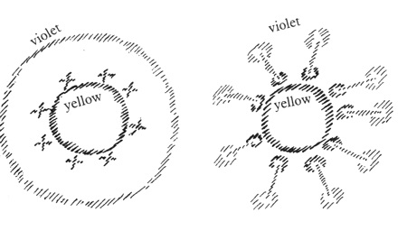

Translated by A.R. Meuss (edited here) - GA177
The event I have been referring to in the preceding lectures, the occasion when certain spirits of darkness were cast out of the spiritual realm and down into the human realm in the autumn of 1879, holds great importance. We have to reflect again and again what it really means to say that a battle raged for decades in the spiritual realms. The battle started in the early 1840s and ended when certain spiritual entities, which had been acting like rebels in the spiritual world during those decades, were vanquished in the autumn of 1879 and cast down as dark spirits into the realm of human evolution. They are now among us and the effect of this is that they send their impulses into our view of the world, not only into the way we think about the world, but also into our inner feelings, our will impulses and even our temperaments. Human beings will be unable to get even a partial understanding of the significant events of the present time and the immediate future, unless they are prepared to recognize the relationship which exists between the physical world and the spiritual world and take as much account of important events like this as they do of natural phenomena. At the present time people generally give validity only to natural phenomena, phenomena of the physical world which are part of historical evolution. They will have to give validity again to spiritual events, which can be perceived with the aid of spiritual science, for only then can the events in which human beings are caught up be really understood.
With reference to this important event it is quite easy to establish how seriously people are in error if they base themselves only on concepts and definitions when considering the world and not on direct observation of reality. One always has the feeling one ought to base oneself on defined concepts — what is Ahriman, what is Lucifer, what are the particular spirits in one hierarchy or another? Those are the questions we ask, and we believe that having got the definitions we have also understood something about the way these entities work. An extreme example of the inadequacy of definitions is the following, which I have quoted before. It may not have been the ideal way of defining the human being, but it is the definition which was given in a school in Greece: A human being is a creature who walks on two legs and does not have feathers. The next time the pupil came to school he brought a plucked cockerel: a creature who walked on two legs and had no feathers. This is a human being, he said, according to the definition.
Many definitions of this kind are generally accepted, and many of our scientific definitions are therefore more or less in accord with the truth. We must not base ourselves on such definitions in anthroposophy, however. Perception will be poor if we base ourselves on abstract definitions. Yes, it is possible to define the term ‘spirits of darkness’, but this will not get us far. Spirits of darkness were cast down from heaven to earth in 1879. This may give a general idea of the spirits of darkness, but it does not get us far in understanding the real issue. The spirits of darkness now walking among us are of the same kind as the spirits of darkness which had been cast down from the spiritual world, that is from heaven to earth, in earlier times; they had specific tasks to perform during the whole of the Atlantean age and right into Graeco-Latin times.
Let us try to use the different insights we have gained and determine the task those spirits of darkness had to perform through millennia, through the whole Atlantean age and on into Graeco-Latin times. It has to be kept in mind that the great scheme of things will only work if higher spiritual entities who have the task of guiding human evolution make use of such spirits, putting them in the right place, as it were, to enable them to do what is necessary. As you will remember, the ‘luciferic temptation’ of old held major significance for human evolution. It did, of course, arise from Lucifer's specific aims — and from Atlantean times onwards Lucifer was in league with Ahriman. These aims gave rise to counter-aims of, let us call them ‘good spirits’, the spirits of light. Fundamentally speaking, the spirits of darkness also wanted the best for humanity in those early times, they wanted human beings to have the capacity for absolute freedom; but humanity was not ready for this at the time. They wanted to provide humanity with impulses which would make every human being an independent individual. It was not to be, however, for humanity was not yet ready.
A counter-force had to be set up by the spirits of light; this was done by taking human beings from the heights of the Spirit and putting them on to the earth, which is symbolically described in the expulsion from Paradise. In reality, human beings were being placed in the stream of hereditary traits. Lucifer and the ahrimanic powers wanted every human being to be an independent individual. This would have meant that people would have become spiritual very rapidly while still immature, but it was not to happen. Human beings were to be educated on earth, brought to full development through the forces of the earth. This was achieved by placing them in the stream of heredity, where they would physically descend from others. In this way they were not independent, but inherited certain traits from their forebears. They were weighed down with earthly qualities which Lucifer did not want them to have. Anything to do with physical heredity was given to humanity by the spirits of light to counterbalance the luciferic stream. A weight was attached to human beings, as it were, and this connected them with the earth. In everything connected with heredity, with the begetting of children, procreation, with love in the earthly sense, we must therefore see ourselves connected with the entities which are under the leadership of Yahveh or Jehovah.
This is the reason why we find so many symbols of procreation and earthly heredity in the ancient religions. The laws of Judaism — which was to prepare the way for Christianity — as well as those of pagan religions, clearly show the importance attached to regulating everything to do with the laws of heredity here on earth. People had to learn to live together in tribes, nations and races, with blood relationship as the signature for the way affairs were ordered on earth.
This had been in preparation during the Atlantean age and was to be repeated in the fourth epoch of civilization, the Graeco-Latin epoch, mainly on account of the measures taken in the third, Egypto-Chaldean epoch. We can see that specifically during epochs which were to recapitulate the Lemurian and Atlantean ages, account was taken of race, nation and tribal connections in all the ways in which human affairs were ordered; in short, account was taken of hereditary traits arising from blood bonds. The priests of the ancient Mysteries were mainly responsible for the ordering of affairs — today we would say for affairs of state — and they took care to observe the way in which customs, inclinations and habits had to develop in various places to take account of blood relationships, of people belonging to a particular nation or tribe. Their laws were based on this. We shall not be able to understand what issued from the Mysteries of the third and fourth post-Atlantean ages unless we consider the careful study of racial, national and tribal relationships on which the priests based the laws they made for different regions of the earth. What really counted in each individual region was to establish order in the blood relationships.
In those times, when the spirits of light made it their concern to order human affairs on the basis of blood relationships, the spirits of darkness which had been cast down from heaven to earth with humanity, made it their concern to work against anything connected with heredity through blood relationship. They were the source of all rebellion against ordinances based on blood relationship in those ages, and of all teachings of rebellion against heredity and against tribal and racial relationships, insisting on the independence of the individual and seeking to establish laws based on this, laws which did, of course, come from human beings but were inspired by the spirits of darkness. Those ages extended as far as the fifteenth century. Echoes still persist, of course, for systems do not come to an abrupt end when there is a major break in evolution. Up to the fifteenth century in particular, we see teachings come up which rebel against purely natural bonds, against the bonds of relationship, family, nationality, and so on.
Thus we have two streams: the ‘protector’ of everything to do with blood relationship, which is the stream of light; it is opposed by the stream of darkness as the ‘protector’ of everything which wants to abandon the bonds of blood relationship and help people to be free of the bonds of family and heredity. All this does not, of course, come to an abrupt halt any more than it does in the natural world, and in 1413, the year when the break occurred which marks the boundary between the fourth and fifth post-Atlantean ages, the old ways did not stop immediately. We can see the influence of the two streams continuing right into our own time. For from the nineteenth century onwards, from the time of the significant events I have described to you, we see something entirely different emerge — I have already made some mention of this. Angelic spirits, members of the hierarchy of the Angels have been active among us since 1879. They follow on after the old spirits of darkness, are related to these and are of a similar kind, but have only been cast down from heaven to earth because of the event which occurred in 1879. Until then they had their function up above, whilst their relatives, who acted in the way I have just described, have been among human beings from Lemurian and Atlantean times.
Thus there was a break in evolution in about 747 before the Mystery of Golgotha; another one came in 1413 after the Mystery of Golgotha, and the break which is particularly important to us, in 1879.
Throughout the whole of this time spirits of darkness were active on earth, whilst certain other spirits of darkness, which are related to those down on earth, were still in the spiritual world. 1841 saw the beginning of the mighty battle of which I have spoken. Then the spirits which are related to those others descended to join them below. The power of the old rebels, of the continuing stream of spirits of darkness who had their tasks to perform from Lemurian and Atlantean times, is gradually dying down as the powers of their brothers begin to take effect. This means that from the last third of the nineteenth century the situation has been completely reversed. The spirits of light who have been continuing in their activities have done enough where the establishment of blood, tribal, racial and similar bonds is concerned, for everything has its time in evolution. In the general and rightful scheme of things, enough has been done to establish what needed to be established through blood bonds in humanity. In more recent times, therefore, the spirits of light have changed their function. They now inspire human beings to develop independent ideas, feelings and impulses for freedom; they now make it their concern to establish the basis on which people can be independent individuals. And it is gradually becoming the task of the spirits who are related to the old spirits of darkness to work within the blood bonds.
The function which was right in the past or, better said, belonged to the sphere of the good spirits of light, was handed over to the spirits of darkness during the last third of the nineteenth century. From this time onwards, the old impulses based on racial, tribal and national relationships, on the blood, became the domain of the spirits of darkness, who had previously been rebels in the cause of independence. They then began to instil ideas in human minds that affairs should be ordered on the basis of tribal relationships, of blood bonds.
You can see that definition is impossible. If you define the spirits of darkness on the basis of the function they had in the past, you get exactly the opposite of their function in more recent times, that is from the last third of the nineteenth century. In the past, it was the function of the spirits of darkness to work against hereditary traits in humanity; from the last third of the nineteenth century they have been lagging behind, wanting to lag behind, wanting over and over again to make people aware of their tribal, blood and hereditary bonds and to insist on these.
These things simply are the truth, though it is a truth which people today find extremely unpalatable. For millennia, human beings have instilled the insistence on blood bonds into themselves, and out of sheer inertia they are letting the spirits of darkness take control of these habitual ideas. We therefore see insistence on tribal, national and racial relationships particularly in the nineteenth century, and this insistence is considered idealistic, when in reality it is an early sign of decline in humanity. Everything based on dominance of the blood principle meant progress for as long as it was under the authority of the spirits of light; under the authority of the spirits of darkness it is a sign of decline. The spirits of darkness made special efforts in the past to implant a rebellious feeling of independence in human beings at the time when hereditary traits were passed on in a positive sense by the progressive spirits. In the three ages of human evolution which now follow and will continue until the time of the great catastrophe, the spirits of darkness will make extreme efforts to preserve the old hereditary characteristics and inculcate human beings with the attitudes which result from such preservation; in this way they introduce the necessary signs of decline into human evolution.
Here is another point where we have to be watchful. In particular, it is not possible to understand the present time unless one knows the change of function which came in the last third of the nineteenth century. A fourteenth-century person who spoke of the ideals of race and nation would have been speaking in terms of the progressive tendencies of human evolution; someone who speaks of the ideal of race and nation and of tribal membership today is speaking of impulses which are part of the decline of humanity. If anyone now considers them to be progressive ideals to present to humanity, this is an untruth. Nothing is more designed to take humanity into its decline than the propagation of ideals of race, nation and blood. Nothing is more likely to prevent human progress than proclamations of national ideals belonging to earlier centuries which continue to be preserved by the luciferic and ahrimanic powers. The true ideal must arise from what we find in the world of the spirit, not in the blood.
The Christ, who is to appear in a specific form in the course of the twentieth century, will know nothing of the ‘ideals’ proclaimed by people today. In earlier times Michael, the spirit from the hierarchy of Archangels was the representative of Yahveh; thanks to the functions given to him in 1879, he will be the earthly representative, the vicar, of the Christ, of the Christ impulse to create spiritual bonds between human beings which will take the place of the purely physical blood bonds. For only the bonds of spiritual communion will bring a progressive element into the entirely natural element of decline. Please note, the element of decline is natural. Human beings cannot remain children as they get older, and their bodies then follow a downward curve of development. In the same way the whole of humanity has entered into a downward trend of development. We have passed the fourth post-Atlantean age and are now in the fifth; this, together with the sixth and seventh, will be old age in the present stage of world evolution. To think that old ideals can live on is no more intelligent than to think people should continue to learn their letters throughout the whole of their lives just because it is good for children to learn their letters. It would be equally unintelligent for people in the future to speak of a social structure for the whole world based on the blood bonds of nations. It is Wilsonianism, of course, but also ahrimanism — of the spirits of darkness.
It is no doubt far from easy to accept the truth of this; it is easier today to share in the phraseologies in common use all over the world. Reality takes no account of phrases; it follows the true impulses. We shall not be able to change the labels on things which no longer hold true for the fifth, sixth and seventh periods, even if they are still being poured into Wilsonian world programmes in a form which still has power to convince a humanity that likes to take the easy way.
There are still enough people, even today, who simply do not want to get to the point where they are prepared to accept such universal human truths, which are independent of all blood bonds. These are universal human truths because they have not come from the earth but have been brought down from the spiritual worlds. How terrible is the reaction already occurring as almost the whole world is resisting the true progress of humanity, and the phrase ‘freedom of nations’ is used for something which goes against the stream of evolution. It has always been the destiny of Mystery-truths that they have had to go against the stream of comfortable ease and with the stream of evolution. And we shall have to see if there will not be at least a small group of people free of all blood prejudices who are able to recognize the phraseology that goes round the world today, phrases signifying that something which in spiritual terms presents itself as the event of November 1879 is now coming to the surface with might and main.
The events of the present time have been foreseen by the initiates of all nations. They were foreseen and forecast, and it was said that a highly reactionary mood would bubble up from the blood and people would believe it to be highly idealistic. We must be able to observe on the large scale, as in small things; we must not allow ourselves to be deflected by the opinions and phrases one hears in the world today. We have to be able to rise a little above ourselves to understand the signs of the times. Yes, you may choose the other road and continue in your blood-prejudices; you will then join the streams which lead downwards. These are coming. You need to know how to be watchful where they are concerned and oppose them with elements which follow the upward trend. The downward trend comes of its own accord.
We must have a feeling for life on the upward and life on the downward trend. Do not fall prey to the foolish inclination to escape from the downward trend, saying, ‘I will have nothing to do with Lucifer, nor with Ahriman.’ I have often censured this foolish inclination, for we must certainly take account of the Spirits which serve the great cosmic scheme of things. Our failure to do so, assuming an attitude where they remain outside our conscious awareness, make them all the more powerful. We shall only be able to judge human affairs if we are able to take a broader view of the impulses of life in the ascendant and also in the descendant. It is important, however, to keep clear of sympathies and antipathies.
Two streams have arisen in modern science; one of these I have called Goetheanism, the other Darwinism. If you study everything I have written, from the very beginning, you will see that I have never failed to recognize the profound significance of Darwinism. Some people were foolish enough to think I had fallen under the spell of materialism, and so on, when I wrote anything in favour of Darwin. We know, of course, that this was not from conviction, but had quite different reasons; and the people who say such things only need to think about it and they will know better than anyone else that they are not true. But if you really study everything I have written you will see that I have always done justice to Darwinism, but have done so by contrasting it with Goetheanism, the view of the evolution of life. I have always sought to see such things as the theory of descent in the Darwinian sense on the one hand and the Goethean on the other, and I have done so because Goetheanism presents the ascending line, with organic evolution raised above mere physical existence.
I have often referred to the conversation between Goethe and Schiller. [ Note 1 ] Goethe drew a diagram of his archetypal plant and Schiller said, ‘That is not empiricism — learning from experience — it is an idea.’ Goethe's reply was: ‘In that case I have my idea in front of my eyes!’ For he saw the spiritual element in everything. Goethe thus initiated a theory of evolution which holds the potential for elevation to the highest spheres, for being applied to soul and spirit. Goethe may only have made a start with organic evolution in his theory of metamorphosis, but we have the evolution of the spirit to which humanity must attain from this fifth post-Atlantean age onwards — for human beings are becoming more inward, as I have shown. Goetheanism can have a great future, for the whole of anthroposophy is on those lines. Darwinism considers physical evolution from the physical side: external impulses, struggle for survival, selection, and so on, and in this way outlines an evolution which is dying down — everything you can discover about organic life if you give yourself up to impulses which came up in earlier times. To understand Darwin, one merely has to make a synthesis of all the laws discovered in the past. To understand Goethe, one has to rise above this to laws which are ever new in earth existence. Both are necessary. It is not Darwinism which is the problem, nor Goetheanism, but the fact that people want to follow one or the other rather than one and the other. This is what really matters.
In future, human beings, the older they get, will need to ingest spiritual impulses if they want to be able to grow younger and younger and really develop their inner life. If they do so, they may have grey hair and wrinkles and all kinds of infirmities, but they will get younger and younger, for their souls are taking in impulses which they will take with them through the gate of death. People who relate only to the body cannot grow younger, for their souls will share in everything the body experiences. Of course it will not be possible to change the custom of going grey, but it is possible for a grey head to gain a young soul from the wellsprings of spiritual life. This is how human evolution will proceed in the fifth, sixth and seventh post-Atlantean ages in terms of Darwin's grey-haired theory, if you will forgive the expression. But in order to go through the catastrophe which is comparable to the earth's death — the catastrophe lying ahead — people must gain the power of youth which lies in Goetheanism, in the theory of metamorphosis and of spiritual evolution. This has to be carried through the future catastrophe, just as in the case of the individual, the rejuvenated soul is carried through the gate of death.
Humanity was able to unite with the earth because when it descended from heaven to earth, if we may put it like this, the spirits of darkness which came down with it laid an adequate foundation for human independence during the time when the laws of heredity, nationality and race prevailed. What Lucifer and Ahriman had done became a good thing in so far as humanity was enabled to unite with the earth. To show this in diagrammatic form, we may put it like this: before Lucifer took action, humanity was united with the whole cosmos including the earth (see diagram, violet); human beings united with the earth (yellow) because hereditary traits — original sin in biblical terms, hereditary traits in scientific terminology — were implanted into them. This made human beings — I am using crosses to indicate them — part of the earth. You see, therefore, that Lucifer and Ahriman are servants of the progressive powers.
Evolution then continued. We are now at the time when human beings live on earth and are united with it. Luciferic and ahrimanic spirits, spirits of darkness, have been cast down from heaven to earth. Because of this, human beings must be released from the earth, torn away from it, with part of their essential nature taken back into the spiritual world. Humanity must develop awareness of not being of this earth, and this must grow stronger and stronger. In future, human beings must walk on this earth who say to themselves: ‘Yes, at birth I enter into a physical body, but this is a transitional stage. I really remain in the spiritual world. I am conscious that only part of my essential nature is united with the earth, and that I do not leave the world where I am between death and rebirth with the whole of my essential nature.’ A feeling of belonging to the spiritual world must develop in us.
In earlier years this merely cast a false shadow in so far as people did not want to understand physical life and practised a false asceticism, believing this to consist in mortifying the physical body in all kinds of ways. It has to be understood that it is not through false asceticism, but by uniting themselves with things of the Spirit, with the essence of things, that people will be able to perceive themselves as not merely earthly creatures but belonging to the whole cosmos. Gaining knowledge of the physical world has merely been a preparation for this. Just think how dependent people were on the soil where they had grown, as it were, right into the fifteenth century, the end of the Graeco-Latin epoch, and how much their development depended on the soil. This was good, but it must not dominate our lives now.
Physical science has torn human beings away from the earth in the physical sense with Copernicanism, and soul awareness must also be torn away from the earth. The earth has become a small body in space; but initially this is only in terms of space. Through Copernicanism human beings were shifted out into the cosmos, as it were, though in entirely abstract terms. This must continue, but it should not be applied to physical life in the wrong way. The physical will take its own course. Take America, for instance, though not the population native to its soil for centuries. As you know, a new population consisting entirely of Europeans has arrived there in recent times. Careful observation shows that physical life continues to be bound to the soil. The Americans who are Europeans transplanted to America are gradually acquiring traits which recall the old Indian population — this has not yet progressed very far, but it is true nevertheless. Their arms are a different length from what they were in Europe because these people have been transplanted to America. The physical human being does adapt to the soil. It even goes so far that there is now a considerable difference in physical form between Americans who live in the West and those who live in the East. This is adaptation to the soil. If the soul were to go along with this physical process the American Indian culture would be revived in time, though in a European form. This sounds paradoxical, but it is true. In future, humanity cannot be bound to the soil; the soul has to become independent. All over the world people may then assume the physical characteristics given by the soil, and the bodies of Europeans may become like Indians when they go to America, but in their souls human beings will tear themselves away from the physical and earthly element and be citizens of the worlds of the spirit. And in those worlds there are no races or nations, but relationships of a different kind.
These things must be understood today when great, tremendous events happen in the world, unless you are going to be mulish — excuse the expression — and present old-established prejudices as new ideals.